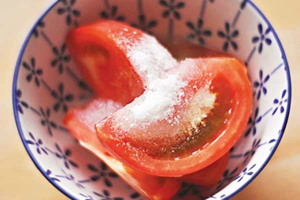
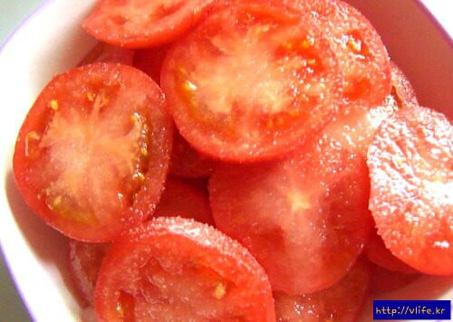

설탕 들이부은 토마토.
지금 기준으로는 당뇨 희망자나 먹는 괴식인가 싶지만
그 시절에는 저게 표준 섭취법이었다. 아무튼 그럼.
토마토 다 먹고 마지막에 국물이..뻨예아!


설탕 들이부은 토마토.
지금 기준으로는 당뇨 희망자나 먹는 괴식인가 싶지만
그 시절에는 저게 표준 섭취법이었다. 아무튼 그럼.
토마토 다 먹고 마지막에 국물이..뻨예아!
그거 먹으면 설사해 ㅠ
플라시보 효과 아닐까?
스테비아 감미료를 먹으면 설사하는
경우가 많은데
그 이유는 스테비아 때문이 아니라
스테비아 2~3%에 에리스리톨이라는
당알콜을 98~97% 넣어서 파는 경우가 많은데
에리스리톨이 설사를 유발하거든
근데 스테비아 토마토는 순수하게
스테비아를 물에 타서 그걸 주입하거나
침지시켜 만들기 때문에 설사를 유발하는
에리스리톨이 사용되지 않음
저 토마토 먹을 때마다 설사를 하길래 찾아봤으니 플라시보는 아님
마지막 국물은 뭐 친환경 토마토주스지 ㅋㅋㅋㅋㅋㅋ
알룰로스에 절인 토마토면 어떤데
읭? 설탕이랑 토마토??
마지막 궁물 미친맛이긴함........
그 시절....? 지금도 스텐다드라고 생각함 ㅋㅋㅋㅋ
난 토마토 역해서 못먹겠드라...
토마토가 그렇게 남자한테 좋다는데
그래서 안 먹는거래잖어~
여잔가 보지
저렇게 먹는 사람 많았었나 보네
표준 섭취 방법임.

국물을 먹어..?
먹어보면 감칠맛 ㅈ됨 ㄹㅇ
개맛있긴해 국물
저번에 실수로 스테비아 토마토 시켰는데 한박스 먹고 진짜 너무 달아서 힘들었다.
그다음부터는 꼭 확인하고 일반 대추방울토마토만 시키는중
저거 국물이 본체임
계란토스트+설탕도 극락임
국물 캬
토마토 자체가 애초에 맛의 정수임

늙어서 금단이 된거임
스테비아 토마토보다 저게 더 좋더라
생전 첨보는디
스테비아보다 저게 맛있음
크아아
설탕 뿌려서 먹다 남은거 냉장고에 넣어서 줜나 차갑게 만들고 바닥에 고여있는 국물 마시면 진짜
술집가면 꼭먹음
소금 조금 뿌려먹음
배부를때 저거만한 안주 없음
설탕 뿌리면 엄마한테 등짝 맞음. 영양소 다 파괴된다고
존나싫음 난 어릴때부터 토마토 원리주의자라 소금 설탕 다 싫었음
아닌디 아직도 안주로 파는 술집들 많어
생토마토 존나 싫어하는데 설탕만 뿌리면 어? 맛있네? 로 변함
당이 적어서 건강식품인 토마토에 어떻게든 당을 첨가해서 먹는 민족 ㅋㅌ
생토마토 맛없어
그 시절 단 음식이 많이 없었으니 추억보정이 크지
나 스테비아 뿌려먹음
막판에 국물까지 쭉 들이켜야함
이건 박미주 말도 들어봐야 한다
게임하믄서 하나씩 먹다보면 순식간임
토마토 가격변동폭이 꽤 크더라
4개입이 3쳔원대일때도 있고 8천원대일때도 있고 건강식이라서 챙겨먹다가 안먹고 영양제나 처먹음...
아는분이 토마토밭 하셔서 매년 싸게먹음 야호
스테비아토마토 생긴이후로 안먹는듯